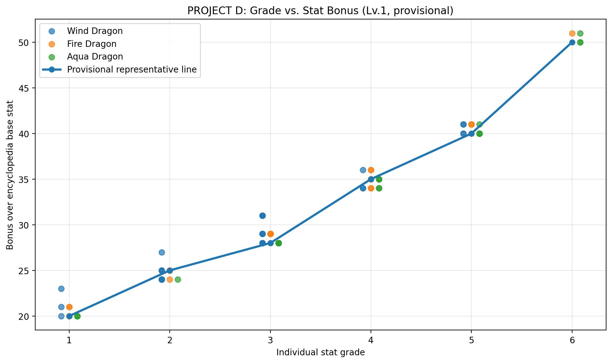

WIND DRAGON
ウィンドドラゴン
Lv.1の5体を測定。同じ個別等級では同じ能力値になる例が複数確認され、6能力が個別に補正される仮説を強めました。
- 体力等級5：2体とも386
- 攻撃等級2：2体とも380
- 抵抗等級2：3体とも364
PROJECT D LAB / WORK IN PROGRESS
図鑑に表示される基礎能力値と、装備なし・平凡な性格の育成個体を比較し、等級補正の仕組みを実測から検証します。
METHOD
同一レベル・同一進化段階の図鑑値と実測値を能力ごとに比較。
レベルと進化段階を実個体に合わせ、6能力の基礎値を確認。
体力・攻撃・防御・魔力・抵抗・速度の個別等級を確認。
性格「平凡」、装備・オーラなしの状態で能力値を確認。
実測値−図鑑値、実測値÷図鑑値の両方から仮説を評価。
FIRST OBSERVATION
ウィンド・ファイヤー・アクアを各5体、合計15体で比較。

| 個別等級 | 観測された上昇量 | 暫定代表値 | 状況 |
|---|---|---|---|
| 1 | +20〜+23 | 約+20 | 複数種で確認 |
| 2 | +24〜+27 | 約+25 | 複数種で確認 |
| 3 | +28〜+31 | 約+28〜29 | 複数種で確認 |
| 4 | +34〜+36 | 約+35 | 複数種で確認 |
| 5 | +40〜+41 | 約+40 | 複数種で確認 |
| 6 | +50〜+51 | 約+50 | ファイヤー・アクアで確認 |
SPECIES DATA
最初の仮説形成に使用した3種類。
WIND DRAGON
Lv.1の5体を測定。同じ個別等級では同じ能力値になる例が複数確認され、6能力が個別に補正される仮説を強めました。
FIRE DRAGON
Lv.1の5体を測定。ウィンドと基礎値が異なるにもかかわらず、等級別の上昇量は近い範囲に集まりました。
AQUA DRAGON
Lv.1の5体を測定。ファイヤーと同様の補正帯を確認し、低レアのLv.1では共通の補正テーブルが存在する可能性が高まりました。
SAME INDIVIDUAL TRACKING
総等級4.0の同じ個体を進化・育成し、補正量の変化を確認。
| 段階 | 例：図鑑HP | 実測HP | 差 | 実測÷図鑑 |
|---|---|---|---|---|
| ハッチ Lv.5 | 382 | 419 | +37 | 約1.097 |
| ハッチリング Lv.5 | 424 | 465 | +41 | 約1.097 |
| ハッチリング Lv.15 | 491 | 541 | +50 | 約1.102 |
| 成体 Lv.15 | 541 | 596 | +55 | 約1.102 |
同じ個体でもレベルと進化段階が同時に変化している区間があるため、「レベル」と「進化段階」の影響はまだ完全には分離できていません。
PENDING CASE
低レアと異なるレアリティで得られた参考データ。
| 能力 | 図鑑値（Lv.30） | 個別等級 | 実測値 | 差 |
|---|---|---|---|---|
| 体力 | 594 | 2 | 642 | +48 |
| 攻撃 | 626 | 6 | 726 | +100 |
| 防御 | 594 | 5 | 674 | +80 |
| 魔力 | 1,062 | 2 | 1,110 | +48 |
| 抵抗 | 694 | 2 | 742 | +48 |
| 速度 | 926 | 3 | 982 | +56 |
RARITY COMPARISON
エピックとレジェンドで、同じ個別等級の補正傾向を比較。
EPIC / Lv.30
LEGEND / Lv.35
| ドラゴン | レアリティ | Lv. | 同一等級で確認できた一致 |
|---|---|---|---|
| ヘイズ | エピック | 30 | 等級2の3能力がすべて +48 |
| 氷河古龍 | レジェンド | 35 | 等級3の2能力が +59、等級5の3能力が +85 |
レジェンドは継続的な収集が難しいため、氷河古龍は参考サンプルとして保存し、今後の主検証は同条件を揃えやすいエピックを優先します。
CURRENT HYPOTHESIS
確定事項ではなく、次の検証を組み立てるための作業仮説。
NEXT STEPS
同レベルの進化前後、同段階のレベル違いを測り、進化とレベルの影響を分離。
まずは成体Lv.30前後のエピックを増やし、個別等級1〜6の補正値を複数個体で確認。レジェンドは参考値として保存します。
予測値と実測値の誤差を比較し、切り捨て・四捨五入・段階別処理を検証。